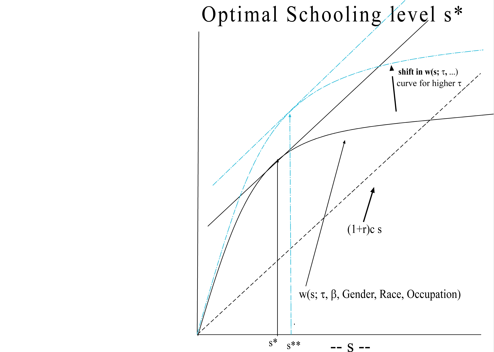

-
Briefly describe the pattern of demographic transition that most of the
European countries went through in the past and the patterns that the less
developed and newly industrialized countries experienced in the recent
past.
-
Describe graphically the Malthusian population trap model of economic development
and population growth.
-
Consider the utility maximization model of household fertility choice that
we considered in the class. Suppose the utility function u( n,z) of a household
over the aggregate marketed good z and the desired number of surviving
children n is given by u( n,z) .
Suppose the price of the aggregate marketed good is pz
= 1 and the cost of a surviving child is pn. Suppose the household
has income I. Show graphically the budget set, indifference curve, and
optimal choice of fertility level. Notice that for any factor that will
affect fertility choice of the individual has to come through its effect
on the child-cost pn relative to the aggregate consumption good,
or through its effect on household income I. Explain how the demand for
children will be affected in each of the following cases, explicitly stating
if the effect is through child cost, pn, through household income
I, or both.
-
(a)
-
When mother gets higher education and thus have better chance of working
and earning higher wages.
-
(b)
-
When government introduces mandatory schooling for all children.
-
(c)
-
When government prohibits employment of child labor.
-
(d)
-
Government spends more money on health so that infant mortality rate goes
down. (Here distinguish between the actual number of children the parents
will have to meet a desired number of children).
-
(e)
-
Government introduces social security program for all.
-
Recall what we mean by private/individual benefits and social benefits
of education. The benefits that directly accrue to one who is engaged in
acquiring education is his/her private or individual benefits. But
if others also benefit from some one else's education, then such benefits
are social or public benefits of education. The other beneficiaries
could be members of the immediate family, could be the community or neighbors,
or could be the whole society, or even the whole world.
(a) What are the private or individual benefits of education? Explain
each type of private benefits with suitable examples.
(b) What are the public or social benefits of education? Explain each
type of social benefits that may accrue to the family members, community,
or the whole society, with suitable examples.
(c) Suppose social benefits exceed the private benefits. That may lead
to a case for government subsidy for education. Can you explain why?
-
Earnings function. Let w be the average yearly earnings of an individual.
What are the determinants of w, i.e., w is a function of certain attributes
of the individual such as s, the number of years of schooling, Age, etc.
I.e.,
| wages = w( s, Age,.....) ,a function of s,
Age |
|
what are the other important factors. Explain how these factors may have
effect on an individual's market earnings. I.e., state how wages will change
for individual with higher s, higher Age and all other factors.
-
Optimal schooling choice (Schooling as investment): Individuals
vary in their innate ability, t, social skills
acquired through family background b, and Gender
(with the convention that if Gender = 1 female, and if Gender = 1 male),
Racial background. Suppose for simplicity that each individual lives for
two periods. In the first period he is young, he does not work, decides
how many years of schooling s to have and goes to school. Here we are talking
about schooling that the individual decides not his parents. In the second
period he is adult, he goes to the labor market and earns wages in the
competitive labor market according to his schooling and other characteristics.
We assume for simplicity that each level of schooling he needs a c dollars
for tuition and all other expenses. He has to borrow money at the interest
rate r per period to finance his schooling.
Calculate the future net value of investment in s years of schooling,
or equivalently, calculate the present value of his investment in s years
of schooling. (ANS: Future value is
| w( s;t,b,Age,Gender,Race,Occupation,Health)
-(1+r)c·s |
|
He maximizes above net future value (equivalently the present value)
to choose his number of years of schooling. The above is illustrated in
the following figure: In the figure, it is shown how the curves shift and
the optimal solution change for an individual with higher t. 
Figure 1: Optimal investment choice of schooling
In each of the following cases, show how the curves will shift and what
will be the new optimal schooling solutions. Give an intuitive interpretation
of why you think the optimal schooling changes the way you found it.
-
An individual with higher b.
-
An individual with higher t.
-
For a male compared to female as reference point.
-
For an African American or Latino compared to White as reference point.
-
An older worker relative to an young worker as reference point.
-
An individual with poorer health with healthy individual as reference point.
-
The criterion for school choice is based on business calculation, treating
schooling as an investment. Explain what are the other factors that are
important in actual schooling choices.
-
In the above, we have dealt with the schooling choices of the individuals
themselves. That is, the criterion is applicable to individuals when they
are age 16+, i.e., they are adults to make their own choices. However,
schooling decisions prior to that age are made by parents. These decisions
include pre-school investment, private or public school, in which neighborhood.
-
Read Entwisle article (posted in the course site) and explain how pre-school
investment is important in producing factors that are important for schooling
and for labor market performance in terms of wage earnings (i.e., for learning
and earning abilities). Which determinants in the above earnings function
are affected by pre-school? Positively or negatively?
-
Would child health during pre-school and during schooling an important
factor in generating traits that are important for developing learning
and earning abilities? Explain how.
-
Suppose, as in many developing countries, parents depend on their children
for augmenting their income. That is, child labor, especially among the
poor, are prevalent. What effects will this have on parent's decisions
about pre-school investment and schooling choice? What can be done to correct
this.
-
Suppose, as in many developing countries, parents depend on their children
for old-age support. If a mandatory social security program is introduced
by the govenment, what effect will it have households fertility choice
and parent's decisions about pre-school investment and schooling choice?
-
School Finance and reform: Most economies including the US have
both private and public school system. In many developing countries, the
public schools are financed from central budget, whereas in the US the
public school is financed mostly by the local taxes of the residents in
the school neighborhood. It has been found, more or less universally, that
in the mixed, private-public education system, private schools perform
better than public schools.
-
What are your arguments for and against keeping the public school system
instead of privatizing the public schools?
-
What measures could be taken to improve the public school system?
-
Given the coexistence of private and public schools, and given that currently
the public schools perform poorly compared with the private schools, it
has been argued that parents could be given school voucher that will provide
a lump-sum amount (which is generally less than what a private school cost)
if a parent would like to move his child from the public school to a private
school. What are the pros and cons of this policy in the context of the
US and in less developed countries?
-
If privatization of schooling is desirable, how should it be done?
-
(What is Social Security?)
-
Broadly, what is a Social Security Program?
-
Describe briefly how social security transfers resources from children
to parents.
-
What role does social security play sharing of risks of old-age disability,
longevity, uncertain macroeconomic fluctuations of inflation and stock
prices?
-
(Informal arrangements of Old Age Pension in LDCs).
-
In the absence of a formal publicly provided social security program, which
is the case for many less developed countries, how these transfers are
performed informally?
-
What is wrong with these informal transfers?
-
Why should we have formal social security system?
-
(Types of Social Security) Explain the various concepts relating
to social security:
-
(a)
-
pay-as-you-go,
-
(b)
-
fully funded,
-
(c)
-
defined contribution,
-
(d)
-
defined benefits.
-
(Source and Nature of Social Security Crisis around the World) Describe
it.
-
(Social Security Reforms, Redesigning Social Security Program).
The Multipillar system suggested by the World Bank Research Group. Describe
it.
Some of the last few questions may not be covered in the class and will
be dropped out. Look for the relevant announcements regarding it.